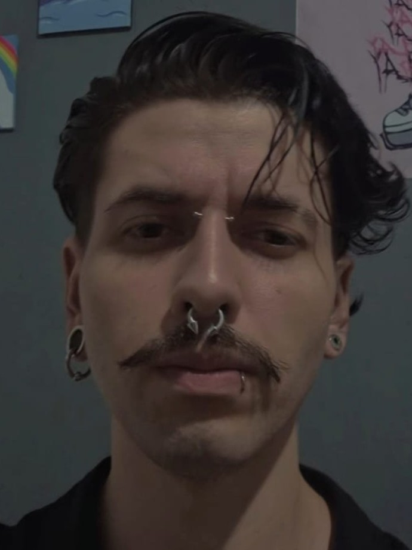

Sobre o Artista
João Lopes, também conhecido pelo seu nome artístico de Bartzabel, é tatuador desde 2023 na cidade de São Paulo. Tem 22 anos e aprecia especialmente estilos como blackwork, rastelado e preto e cinza. Desde jovem, Bartzabel demonstrou interesse pela arte e pela cultura alternativa, o que o levou a explorar o mundo da tatuagem.